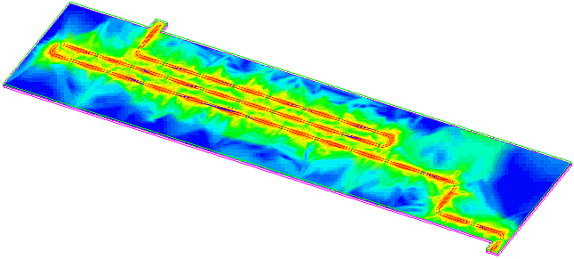

Trace switch-back
A switch-back on the stripline trace was necessary because of limited space on the UAB and the requirement that all striplines had to be 25 cm (10 inch) long. The spacing of the switch-back was verified in a 3D simulation to avoid any significant coupling (see figure below).

Functional changes
- Introduced before SmarTest 6.3.2